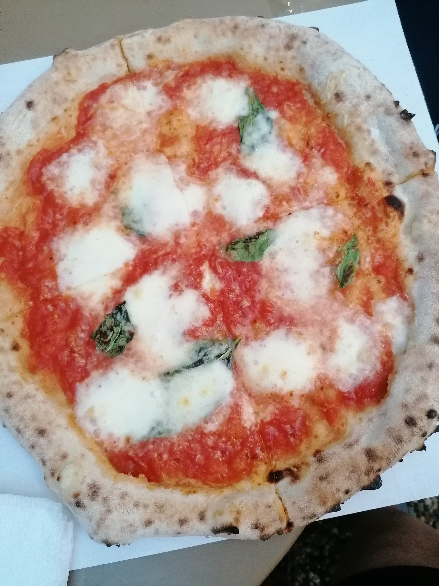

Egy kis Nápoly a Balaton mellett
A budapesti Apacuka étterem és a Digó pizza összeállt és közösen nyitott egy eldugott, ám annál autentikusabb kerthelyiséget Balatonakarattyán.
A júliusban megnyílt Apacuka kert árnyas, nagyon kellemes környezetben található a Lidó strand bejáratához közel. Esténként szuper hangulatos beülni, inni valamit és beszélgetni, de ha éhesen érkezünk akkor is jó helyen járunk, ugyanis kiváló a pizza. Az elsősorban nápolyi jellegű pizzákat kínáló helyre mindenképp megéri betérni legalább egyszer a nyáron.

Fotó: Balaton.Szerintem.